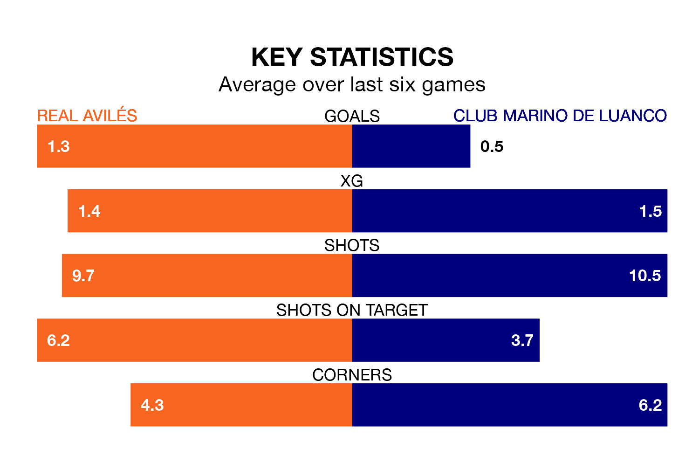

Club Marino de Luanco travel to Real Avilés on late Sunday in the Segunda División RFEF Group 1.
The visitors come into the game on the back of a win in their last match, having beaten Real Oviedo B 1-0 at home.
Avilés, meanwhile, lost their last match, 2-1 against Racing Santander B, with their goal scored by Claudio Medina Ricoy.
With 22 goals in 29 games so far this season, Club Marino de Luanco are the league's second-lowest scorers with 0.8 goals per game. But they are conceding fewer than average too, letting in 20 goals at a rate of 0.7 per game.
Avilés, meanwhile, are above average scorers, with 1.2 goals per game, compared to a league average of 1.1. They have conceded 1.0 goal per game.
In the last 10 years, Avilés and Club Marino de Luanco have played each other on 11 occasions. Avilés won five of them, Club Marino de Luanco two, and they drew four times.
On average, Avilés scored 0.8 goals and Club Marino de Luanco 0.5 in those matches.
Their last meeting was on November 26, when they played out a 0-0 draw.
The home team are in mixed form in the Segunda División RFEF Group 1, with two wins and a draw from their last six games.
And also with two wins and a draw over that period, the visitors' form is identical – they have both taken seven points from 18.
Club Marino de Luanco are 11th in the table after 29 games, of which they have won seven and drawn 14, earning 35 points.
Avilés are two places ahead of Club Marino de Luanco in ninth, with eight wins and 13 draws putting them on 37 points.
Updated: 16:41 (UTC), 04/04/24